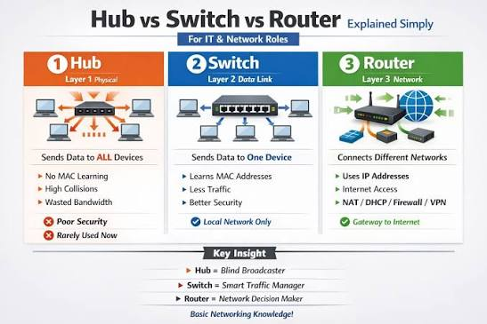

🔌 Netzwerkgeräte & Routing
i
Hub, Switch und Router sehen von aussen ähnlich aus (Kisten mit
Kabeln dran), arbeiten aber auf komplett unterschiedlichen Ebenen
des Netzwerks - mit sehr unterschiedlichen Konsequenzen für
Performance und Netzwerkdesign.
i
Hub vs. Switch vs. Router im Vergleich - und wie ein Router anhand seiner Routing-Tabelle entscheidet, wohin ein Paket als Nächstes geht.
📺 Vertiefung: HUB vs. SWITCH vs. ROUTER (einfach erklärt) (Florian Dalwigk)
Checkliste
Hub, Switch, Router im Vergleich
| Gerät | OSI-Schicht | Entscheidet anhand von | Verhalten |
|---|---|---|---|
| Hub | 1 (Bitübertragung) | nichts (blind) | Sendet an ALLE Ports, geteilte Kollisionsdomäne, Half-Duplex |
| Switch | 2 (Sicherung) | MAC-Adressen | Sendet gezielt an den richtigen Port, eigene Kollisionsdomäne pro Port |
| Router | 3 (Vermittlung) | IP-Adressen (Routing-Tabelle) | Verbindet unterschiedliche Netzwerke/Subnetze miteinander |

Wichtig: Ein Switch trennt Kollisionsdomänen (pro Port), aber ohne VLANs bleibt die Broadcast-Domäne dieselbe - ein Broadcast erreicht weiterhin alle angeschlossenen Geräte. Erst ein Router (oder ein VLAN) trennt auch Broadcast-Domänen.
Routing-Tabellen & Longest Prefix Match
i
Stell dir eine Postleitzahl vor: "8000 Zürich" ist spezifischer als
"8000-8999 Schweiz". Ein Router wählt immer die genaueste
passende Angabe - nicht die zuerst eingetragene.
i
Eine Routing-Tabelle besteht aus Einträgen mit Ziel-Netzwerk (CIDR) und Gateway/Interface, über das Pakete für dieses Netzwerk weitergeleitet werden. Passen mehrere Einträge auf dieselbe Ziel-IP, gewinnt nicht der zuerst eingetragene (wie bei Firewall-Regeln), sondern der mit der längsten (spezifischsten) Präfixlänge - "Longest Prefix Match".
Ziel-Netzwerk Gateway 0.0.0.0/0 203.0.113.1 (Standard-Route, "Rest der Welt") 10.0.0.0/8 10.0.0.1 (ganzes Unternehmen) 10.55.0.0/16 10.55.0.1 (ein Standort) 10.55.3.0/24 10.55.3.1 (eine Abteilung)
Für die Ziel-IP 10.55.3.42 passen hier
gleich DREI Routen (/8, /16, /24) - gewonnen hat die /24-Route, weil
sie am spezifischsten ist.
🔎 Geräte-Quiz
Welche Route wird verwendet?
| Ziel-Netzwerk | Gateway |
|---|
Ziel-IP: